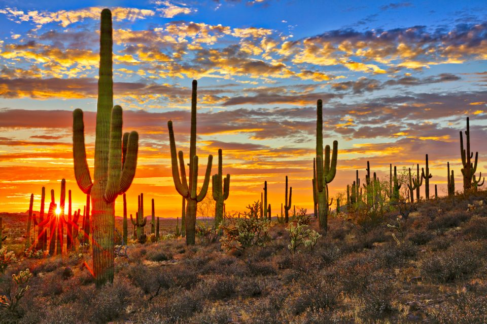

The Sonoron Desert is in the middle of North America and wraps the Northwestern part of Mexico as well as bits of the southwestern part of the United States. The area of this desert is as big as 260,000 square kilometres. One of the hottest weather of this place is 80.8 degrees Celsius (177.4 degrees farenheit), which is the hottest weather recorded in America and Mexico.
